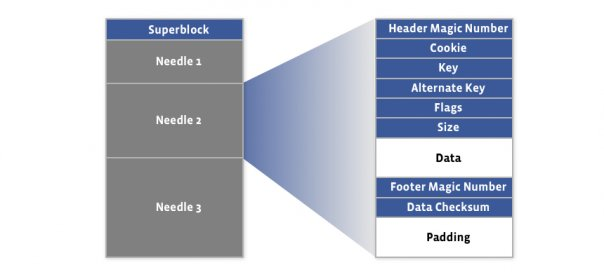
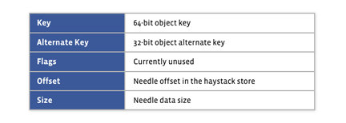
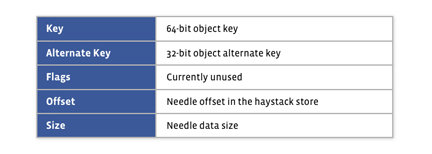

Базы данных: введение, часть шестая
Илья Тетерин
2011-10-26
(use arrow keys or PgUp/PgDown to move slides)
Илья Тетерин
2011-10-26
(use arrow keys or PgUp/PgDown to move slides)
Строим фотохостинг
Поймал щуку - хочу показать друзьям в другом городе
google:самая первая картинка в интернете
->wikipedia:First_image_on_the_Web
Back in 1992, after their show at the CERN Hardronic Festival, my colleague Tim Berners-Lee asked me for a few scanned photos of "the CERN girls" to publish them on some sort of information system he had just invented, called the "World Wide Web".
I had only a vague idea of what that was, but I scanned some photos on my Mac and FTPed them to Tim's now famous "info.cern.ch".
How was I to know that I was passing an historical milestone, as the one above was the first picture ever to be clicked on in a web browser!
В 1992-ом году, после шоу CERN Hardronic Festival, мой коллега Тим Бернерс Ли попросил у меня пару фоток "тех девчонок из ЦЕРНа", дабы опубликовать их в свежеизобретенной им системе под названием "Всемирная паутина".
Я не очень понял что он хотел, но отсканировал несколько фоток на моем Маке и выложил их на ныне известный ftp "info.cern.ch".
Откуда мне было знать, что так получилась первая в мире фотка, кликнутая в браузере!

Les Horribles Cernettes ("The Horrible CERN Girls") is an all-female parody pop group, self-labelled "the one and only High Energy Rock Band", founded by employees of CERN which performs at CERN and other HEP related events. The initials of their name, LHC, are the same as those of the Large Hadron Collider which was later built at CERN.
Вопрос: а если надо 100 картинок?
Ответ: сложу в .zip, заберут распакуют, посмотрят.
можно сделать красиво
более простые пользователи
больше пользователей
Растет количество файлов и пользователей, объем данных, что делать?
Для быстрой отрисовки html страниц на клиенте нужна мета информация
Размеры картинки для
<img src="..." height="480" width="320"/>.
Так же текстовое описание для alt="..." атрибутов.
Это особенность клиента-браузера - страница показывается до того, как подгружены картинки, если известны все размеры. Пока картинка грузится - виден альтернативный текст.
Кстати: клиенты хотят не только картинки, но и разные размеры - иконка 32х32, 128х128, 640х480 етс - 4-5 размеров.
Взрыв количества картинок в системе
Много файлов в каталоге - сделаем дерево.
По пользователю - /data/иванов/, /data/петров/ etc.
Плохо - у пользователей разное колво картинок, у самых активных (полезных) - тормозит.
Сделаем hash названия+пути и разложим в каталоги /data/0000/0001, /data/0000/0002 etc.
Проблема: Очень обидно, когда накладываются hash.
Ответ: будем назначать id картинке сами (20000001.jpg) и класть в каталоги в обратном порядке: /data/01/00/00/20.jpg
1. читаем информацию дважды - для html страницы и когда забирают картинку
Плохо - мета информацию надо парсить и она в разных местах у разных форматов.
2. кладем рядом .txt файлик с описанием
Уже лучше - файл проще и меньше, но все равно 2 раза ходить в fs
3. делаем index (index.txt) - по 1 файлу в каталоге
Заметно лучше - меньше дерганий диска, быстрее.
Идеально - файловая система с доп. атрибутами файла, но ...
Почему не сделать один файл на весь /data?
Он постоянно меняется при добавлении, падает скорость добавления данных из-за блокировок.
Опять же растет объем файла (плавно приближается по размеру к самой FS таблице) - долго просматривать.
Репликация файловой системы - просто копируем каталоги с одного сервера на другой
Например - rsync раз в 5 минут смотрит новые файлы и несет на другой сервер
Master-slave и так далее ...
Что хорошо - каталог (даже с индекс файлами) самодостаточен и легко копируется.
create table images (
id number primary key, width number, height number, alt varchar(200));
create table keywords (id number primary key, value varchar(200));
create table keyword_image (keyword_id number, image_id number);Плюсы - база сама разберется с блокировками, с доступом по сети с нескольких серверов etc.
За счет keywords - есть возможность сделать поиск по тэгам (животное, машинки етс).
Идеально, но ...
У нас же мощный DB сервер и проверенная временем база Oracle / MySQL...
Там есть:
BLOB - бинарный объект с макс. размером 4Gb * размер блока (8kb)
BFILE - ссылка на файл, хранимый на сервере базы - макс. размер 4Gb
create table image_body (id number primary key, body blob);плюсы:
все в одном месте - понятнее
один мощный сервер, а не куча файловых складов
нет вопросов consistency (что записали, то сразу всем видно) и т.д.
Backup средствами базы
Master slave средствами базы
минусы:
решение монолитно и быстро упирается в мощность сервера - ака тупик :-(
polyglot = полиглот = смешение языков
persistence = выносливость, живучесть, стойкость
Комбинируйте из разных баз (хранилищ) системы, которые хороши для ваших потребностей.
Монолитность - в прошлом на текущий момент.
2007-ой год, Архитектура Фликера (Flickr Architecture (перевод by Insight IT)):
Статистика
Всё кроме фоток - а базе данных
Статичные данные - на отдельных серверах
Клиенту выдается список серверов и клиент в случае ошибки сразу retry к следующему серверу
Активные связки master-master для MySQL, так как master-slave слишком медленно
Каждая страница - 27-35 SQL запросов, включая select count(*) для счетчиков
Шарды по 400К+ пользователей
Сервера 16Gb RAM / 120Gb данных / RedHat Linux
12Tb данных о пользователях (это без самих фоток)
etc ...
И это 2007 год
Needle in a haystack: efficient storage of billions of photos - Иголка в стоге сена: эффективное хранение миллиардов фоток
Май 2009
Статистика
* 15+ млрд фоток
* 4 размера на каждую фотку = 60+ млрд фоток
* 1.5 Pb данных
* 220 млн новых фоток в неделю = 25Tb данных в неделю
* в пике отдаем 550 000 фоток в секунду
Сервера загрузки - получают фотку, ресайзят, складывают в NFS (сетевая файловая система)
Сервера отдачи - получают по http запрос, ищут в NFS файл, отдают
Сервера NFS - ( commercial storage appliance ) - покупные специализированные сервера для хранения файлов
Каждое фото - отдельный файл - очень много оверхеда и метаданных для NFS - bottleneck
Два слоя кеширования поверх NFS
Все равно море I/O операций на каждую фото
файл данных - 8kb супер блок и только добавляемые данные

файл индекса
 

Просто меньше по размеру ( < 1% ), в том же порядке, может быть восстановлен по файлу данных
Сортировка и скорость - на стороне клиента, сами сортируйте индекс у себя
Запись
Добавляем в данные, fsync, добавляем в индекс, изредка скидываем индекс на диск (ибо его можно восстановить)
Модификации нет - только добавляем, чем больше offset в файле, тем более свежие данные
Чтение
На входе сложный ключ (offset, key, alt key, cookie, datasize (взятые из index файла)).
Отдаем только если key + alt key + cookie совпали
Удаление
Просто проставляем флажок в нужном месте, индекс не обновляем совсем - пусть ссылается на удаленное.
Освобождаем место - только при перестроении стога
обрабатывает http запросы
На старте берет в память индексы - нужны минимальные записи:
* 64 bit назначенный ключ
* сдвиг 1-ой уменьшенной копии + размер
* сдвиг 2-ой уменьшенной копии + размер
* сдвиг 3-ей уменьшенной копии + размер
* сдвиг 4-ой уменьшенной копии + размер
Добавление
назначаем ключ, отправляем в стог
обновляем индекс в памяти, оставляя с большим offset
Чтение
По урлу (http://a5.sphotos.ak.fbcdn.net/hphotos-ak-snc7/305268_2286336594015_1116922192_32407711_680601277_n.jpg) получаем:
* id стога
* ключ фото
* размер
* cookie (нужен, дабы нельзя было _перебрать_ все существующие фотки)
Идем в стог, получаем данные. Если получаем "удалено", обновляем индекс у себя (проставляем offset = 0)
Удаление
команда в стог на удаление, обновляем у себя индекс
Сжатие
на ходу можем "сжимать" стог - делается новая копия данных, выкидывая удаленные и старые копии, подкладывается на место, обновляются индексы
HTTP сервера
учитывая что скорость определяется I/O сети, а не вычислительной мощностью - скорость HTTP сервера малозначима
Получилась масштабируемая система хранения бинарных объектов.
Используется не только для фото, но и для хранения email attach-ей в Facebook Message System
Уменьшен на порядки overhead работы с файлами - пара файлов на 100 000+ фоток
Маленькие индексы - влезают в память - не нужно I/O на метаданные
Получение данных - минимальное количество I/O